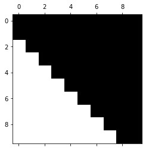
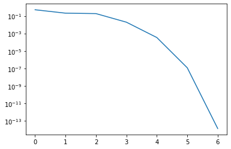
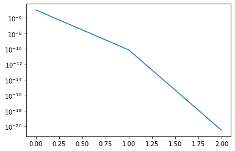

Computing the eigensystem#
So far we have focused on individual eigenvalues and eigenvectors. Now we turn to the QR iteration, which builds on the QR decomposition/factorisation we studied earlier.
The Schur decomposition#
The eigenvalue decomposition \(A = X\Lambda X^{-1}\) is not always suitable for computational purposes. It might not exist, requiring a Jordan normal form instead. Even though small machine perturbations usually ensure diagonalizability in floating-point arithmetic, the proximity to a Jordan form can introduce instabilities. The eigenvector matrix \(X\) might also be ill-conditioned, making its inverse computationally unreliable.
For practical computations, the Schur decomposition of \(A\) is more robust.
Theorem 18 (Existence of the Schur decomposition)
Every complex matrix \(A \in \mathbb{C}^{n \times n}\) has a Schur decomposition
with unitary \(Q\in\mathbb{C}^{n\times n}\) and upper triangular \(R\in\mathbb{C}^{n\times n}\).
The proof is given in the optional material section below. Let’s explore some key properties of the Schur decomposition:
Eigenvalues: The eigenvalues of \(A\) are the diagonal elements of \(R\). This is evident from the equation \(\det(\lambda I - A) = \det Q \det Q^H \det(\lambda I - R)\) and expanding the determinant of \(\lambda I - R\) along its diagonal.
Hermitian Matrices: For Hermitian \(A\), the Schur decomposition coincides with the eigenvalue decomposition. Since \(A = A^H\), it implies \(R = R^H\), which means \(R\) is diagonal. The first column of \(Q\) corresponds to the eigenvector for the eigenvalue \(r_{11}\) in \(R\).
Invariant Subspaces: Consider \(R_k\), the upper left \(k \times k\) principal submatrix of \(R\), and \(Q_k \in \mathbb{C}^{n \times k}\), the matrix of the first \(k\) columns of \(Q\). It holds that \(AQ_k = Q_kR_k\). This implies that for any vector \(v\) in the span of \(\{q_1, \ldots, q_k\}\), \(Av\) is also in this span:
\[ v\in \text{span}\{q_1, \dots, q_k\} \implies Av\in \text{span}\{q_1, \dots, q_k\}. \]We say that the subspace is invariant under \(A\). The Schur decomposition thus reveals a sequence of enlarging invariant subspaces.
Pure QR iteration#
In its basic form, the QR iteration is suprisingly simple.
Algorithm 5 (Pure QR iteration)
Inputs \(A \in \mathbb{R}^{n \times n}\)
Outputs In the limit \(Q, R \in \mathbb{R}^{n \times n}\)
\(A_0 := A\).
For \(k\) in \(\{1, \ldots, n\}\):
Compute QR factorisation of \(A_{k-1}\): \(Q_k \, R_k = A_{k-1}\)
\(A_k = R_k \, Q_k\)
The first observation is that all \(A_k\) are similar:
and therefore
Hence, the QR iteration returns the above Schur decomposition if
where the convergence may be (by norm equivalence) understood in any matrix norm \(\| \cdot \|\).
Theorem 19 (Convergence of the pure QR iteration)
Let \(A \in \mathbb{R}^{n \times n}\) be non-singular and diagonalisable with in modulus distinct eigenvalues:
Suppose that the inverse of the matrix \(T = (v_1| \ldots| v_n) \in \mathbb{R}^{n \times n}\) of normalised eigenvectors \(v_k\) of \(\lambda_k\) has an LU decomposition without pivoting (i.e. \(T^{-1} = LU\)). Then, with signs adjusted as necessary, the \(A_k\) converge linearly to \(R\):
Proof. For the full proof see [Plato, 2003] or [Trefethen and Bau, 1997]. Here we cover the convergence of \(A_k \to R\) in the simpler case \(n = 2\) without determining the rate of convergence.
We conclude from the above that
Let \(q_k\) be the first column of \(Q_1 \cdots Q_k\). Then the previous identity gives
This is exactly the defining equation of the power iteration, with that top-left entry \((R_{k+1})_{11}\) taking the role of \(\lambda^{(k)} = (q_k)^H A q_k = (R_{k+1})_{11} \| q_{k+1} \|^2 = (R_{k+1})_{11}\). As the hypotheses of the theorem include those needed for the convergence proof of the power iteration, \((R_{k+1})_{11} \to \lambda_1\) and \(q_k \to v_1\) as \(k \to \infty\).
In the case \(n = 2\), the second column of \(Q_1 \cdots Q_k\), being orthonormal to the first, converges (up to sign adjustments) to \(v_2\), which is known to be orthogonal to \(v_1\). Finally,
Practical QR iteration#
In practice, the QR iteration is modified to increase that rate of convergence.
The first is to build in the idea of shifts, that we have already come across as \(\sigma\) when studying the inverse iteration.
The second is to transform the matrix first into a similar tri-diagonal matrix (only the diagonal and the first off-diagonals have non-zero entries).
In addition, techniques can be applied to break the iteration into smaller (computationally cheaper) subproblems when zeros in off-diagonal entries are discovered. These approaches are called deflation strategies.
For real symmetric matrices the resulting QR iteration exhibits very fast cubic convergence, with \(\mathcal{O}(n^3)\) operations to achieve machine accuracy.
Numerical investigation of QR iteration steps#
import numpy as np
from scipy.linalg import qr, hessenberg
from matplotlib import pyplot as plt
%matplotlib inline
We start with some random matrix \(A\).
rand = np.random.RandomState(0)
n = 10
A = rand.randn(n, n) + 1j * rand.randn(n, n)
Let us first tranform the matrix to upper Hessenberg form. This can be implemented as similarity transformation that does not change the eigenvalues.
H = hessenberg(A)
plt.spy(H)

We see that the matrix and its first lower diagonal are nonzero. Upper Hessenberg structures are preserved by a QR iteration step. Let’s check this.
Q, R = qr(H)
H2 = R @ Q
plt.spy(H2)

This structure preservation can be used to implement a QR iteration step in a highly efficient manner. We will not go into technical details about this here.
Let us now run a couple of iterations of the QR iteration and let’s see how quickly the second to last element in the last row of \(H\) converges to zero. If it is zero the bottom last diagonal element is a wanted eigenvalue (convince yourself that this is true).
nsteps = 300
H = hessenberg(A)
residuals = np.empty(nsteps, dtype='float64')
for index in range(nsteps):
Q, R = qr(H)
H = R @ Q
residuals[index] = np.abs(H[-1, -2]) / np.abs(H[-1, -1])
plt.semilogy(residuals)
The convergence is extremely slow. We can speed this up by a shift strategy. The idea is to modify the QR iteration step so that it reads
Hence, we subtract the shift and do the QR decomposition, and then when we compute \(R_mQ_m\) we add the shift back in.
Once can show that a QR step is equivalent to inverse iteration applied to the last vector in the simultaneous iteration. Hence, by applying the shift we perform a shifted inverse iteration. What shall we use as shift?
It turns out that we achieve quadratic convergence if we simply use the bottom right element of the Hessenberg matrix in each step as shift. This is similar to the Rayleigh quotient method for symmetric problems, where we adapted the shift in each step.
The following implements the shift strategy.
nsteps = 7
H = hessenberg(A)
residuals = np.empty(nsteps, dtype='float64')
ident = np.eye(n)
for index in range(nsteps):
shift = H[-1, -1]
Q, R = qr(H - shift * ident)
H = np.dot(R, Q) + shift * ident
residual = np.abs(H[-1, -2]) / np.abs(H[-1, -1])
print(f"Residual: {residual}")
residuals[index] = residual
plt.semilogy(residuals)
The output is
Residual: 0.508873616732413
Residual: 0.2076653000186893
Residual: 0.18529890729552823
Residual: 0.01935687814656868
Residual: 0.00034094139006009337
Residual: 1.1837354557680947e-07
Residual: 1.3539693075470919e-14

We have seen convergence in 7 iterations. Let us now reduce the matrix and continue with the next smaller matrix.
nsteps = 3
H_reduced = H[:-1, :-1] # Copy H over to preserve the original matrix
residuals = np.empty(nsteps, dtype='float64')
ident = np.eye(n-1, n-1)
for index in range(nsteps):
shift = H_reduced[-1, -1]
Q, R = qr(H_reduced - shift * ident)
H_reduced = R @ Q + shift * ident
residual = abs(H_reduced[-1, -2]) / abs(H_reduced[-1, -1])
print(f"Residual: {residual}")
residuals[index] = residual
plt.semilogy(residuals)
This returns
Residual: 1.0943921434074488e-05
Residual: 7.568006610141011e-11
Residual: 3.1024322351139375e-21

We have now observed convergence in 3 iterations. In practice, with more sophisticated shift variants and good deflation strategies the QR iteration takes typically only 2 to 3 iterations per eigenvalue, where each iteration has quadratic cost. Hence, the overall algorithm converges usually in cubic time. Even though the QR iteration is an iterative algorithm, we still speak of a method with cubic complexity, since this holds in almost all cases.
Python skills#
Below you find an implementation of the pure QR iteration.
import numpy as np
def pure_qr_iteration(A, max_iter=1000, tol=1e-10):
"""
Computes the eigenvalues and eigenvectors of matrix A using the pure QR iteration method.
Parameters:
A (numpy.ndarray): The input square matrix.
max_iter (int): Maximum number of iterations.
tol (float): Convergence tolerance for off-diagonal elements.
Returns:
numpy.ndarray: Approximated eigenvalues.
numpy.ndarray: Approximate eigenvectors.
"""
A_k = A.copy().astype(float) # Ensure floating-point computation
n = A.shape[0]
eigenvectors = np.eye(n) # Accumulate eigenvectors
for _ in range(max_iter):
Q, R = np.linalg.qr(A_k) # QR decomposition
A_k = R @ Q # Update A_k
eigenvectors = eigenvectors @ Q # Update eigenvectors
# Check for convergence: sum of squared off-diagonal elements
off_diagonal_norm = np.sqrt(np.sum(A_k[np.triu_indices(n, k=1)]**2))
if off_diagonal_norm < tol:
break
return np.diag(A_k), eigenvectors
Let us compare the result with the build-in np.linalg.eig command:
# Define a symmetric matrix
A = np.array([[4, 1, 1], [1, 4, 1], [1, 1, 2]])
# Compute eigenvalues and eigenvectors using QR iteration
eigenvalues, eigenvectors = pure_qr_iteration(A)
eigenvectors = normalize_eigenvectors(eigenvectors)
# Display results
print("Approximated Eigenvalues:", eigenvalues)
print("Approximated Eigenvectors:\n", eigenvectors)
# Compare with NumPy's eig function
eigenvalues_np, eigenvectors_np = np.linalg.eig(A)
eigenvectors_np = normalize_eigenvectors(eigenvectors_np)
print("NumPy Eigenvalues:", eigenvalues_np)
print("NumPy Eigenvectors:\n", eigenvectors_np)
We have used here the helper function normalize_eigenvectors, which ensures eigenvectors have unit length and a positive first nonzero entry.
def normalize_eigenvectors(V, tol=1e-10):
"""
Normalizes eigenvectors such that each has unit length and a positive first nonzero entry.
Parameters:
V (numpy.ndarray): Matrix of eigenvectors (columns are eigenvectors).
tol (float): Tolerance below which values are considered zero.
Returns:
numpy.ndarray: Normalized eigenvectors.
"""
# Normalize each column to unit length
norms = np.linalg.norm(V, axis=0)
norms[norms == 0] = 1 # Avoid division by zero
V_norm = V / norms
# Ensure the first nonzero entry of each eigenvector is positive
for i in range(V_norm.shape[1]):
first_nonzero_index = np.where(V_norm[:, i] != 0)[0] # Find nonzero indices
if len(first_nonzero_index) > 0:
first_nonzero = first_nonzero_index[0] # First nonzero row index
if V_norm[first_nonzero, i] < 0:
V_norm[:, i] *= -1 # Flip sign
# Set small values to zero
V_norm[np.abs(V_norm) < tol] = 0.0
return V_norm
Self-check questions#
Question
Consider two orthogonal matrices \(Q_1, Q_2 \in \mathbb{R}^{n \times n}\) and regular upper triangular matrices \(R_1, R_2 \in \mathbb{R}^{n \times n}\) such that
Then there exists a matrix \(S = \text{diag}(s_1, \ldots, s_n)\) with \(s_i \in \{-1, 1\}\) such that
Answer
By the assumptions of the question
The products and inverses of orthogonal matrices are orthogonal. Similarly, the products and inverses of regular upper triangular matrices are regular and upper triangular.
Therefore, \(S\) is upper triangular and \(S^{-1} = S^T\), implying that \(S\) is a diagonal matrix:
Again with \(S^{-1} = S^T\) we conclude \(s_i = 1/s_i\) therefore that \(s_i = 1\) or \(s_i = -1\).
Note: In conclusion, for regular matrices the QR decomposition is unique up to the choice of signs.
Question
What happens if the pure QR iteration is applied to the orthogonal matrix
Does the iteration converge? If convergence takes place, is the Schur decomposition attained in the limit and do eigenvalues appear explicitly as entries of a matrix?
You may suppose the decomposition favours positive signs on the diagonal of \(R\).
Answer
We begin by recording that the eigenvalues of \(Q\) are complex: \(\lambda_1 = i\) and \(\lambda_2 = -i\).
The pure QR iterations computes \(Q_k = Q\) and \(R_k = I\). Thus \(A_k = R_k Q_k = Q\). Thus the iteration creates a constant sequence \((Q_k, R_k, A_k)\) that thus converges.
In particular, \(A_k\) does not converge to an upper triangular matrix and as complex numbers do not arise in the computations, the eigenvalues do appear explicitly as entries of a matrix.
We note that the so-called real form of the Schur decomposition is attained, in which pair of complex eigenvalues give rise to \(2 \times 2\) blocks on the diagonal of an almost triangular factor \(R\).
Question
What happens if the pure QR iteration is applied to the symmetric matrix
Does the iteration converge? If convergence takes place, is the Schur decomposition attained in the limit and do eigenvalues appear explicitly as entries of a matrix?
You may suppose the decomposition favours positive signs on the diagonal of \(R\).
Answer
We begin by recording that the eigenvalues of \(A\): \(\lambda_1 = 2\) and \(\lambda_2 = 0\).
The pure QR iteration computes
From now on \(Q_k = I\) and \(R_k = A_k = A_1\). The sequence converged and indeed the eigenvalues are found on the diagonal of all \(A_k\).